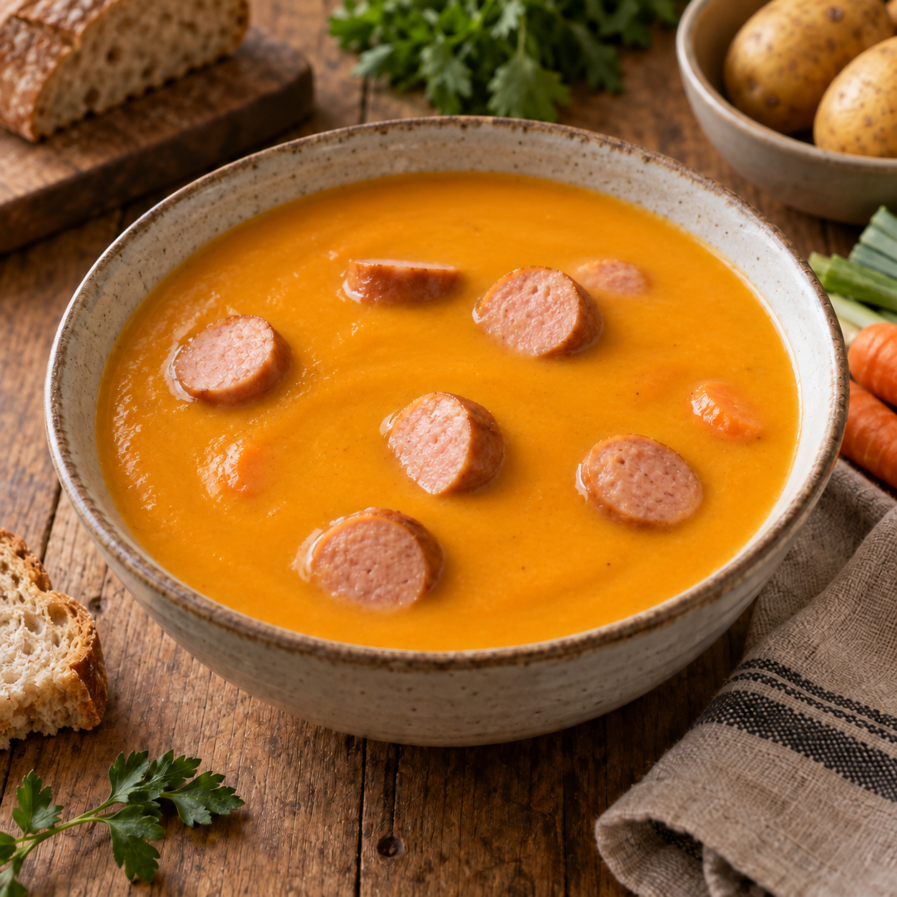

Unsere Klassiker
Kartoffelsuppe

Eine herrlich sämige Kartoffelsuppe mit viel Gemüse und Wiener Würstchen. Sie darf ruhig schön dickflüssig bleiben – genau so schmeckt sie am besten.
Zutaten
1 kgKartoffeln
4Karotten
1 BundSuppengrün
2 ELGemüsebrühepulver, plus etwas zum Abschmecken
Nach BedarfWasser
3 PaarWiener Würstchen
Nach GeschmackSalz
Zubereitung
- Die Kartoffeln und Karotten schälen und grob zerkleinern. Das Suppengrün putzen und ebenfalls grob schneiden – die Stücke müssen nicht besonders gleichmäßig sein.
- Das gesamte Gemüse in einen großen Topf geben. So viel Wasser angießen, dass es knapp bedeckt ist, und das Gemüsebrühepulver einrühren.
- Alles aufkochen und anschließend bei mittlerer Hitze etwa 25–30 Minuten garen, bis das Gemüse vollständig weich ist.
- Das gegarte Gemüse zusammen mit der Brühe durch eine Passiermühle, die sogenannte Flotte Lotte, drehen.
- Die Suppe mit Salz und bei Bedarf etwas weiterem Gemüsebrühepulver abschmecken. Ist sie zu dick, schluckweise Wasser einrühren. Sie darf aber ruhig schön dickflüssig bleiben.
- Die Wiener Würstchen in Scheiben schneiden, zur Suppe geben und darin einige Minuten heiß werden lassen.
Tipp
Aufgewärmt schmeckt die Kartoffelsuppe sogar noch besser. Deshalb lässt sie sich prima schon am Vortag vorbereiten.